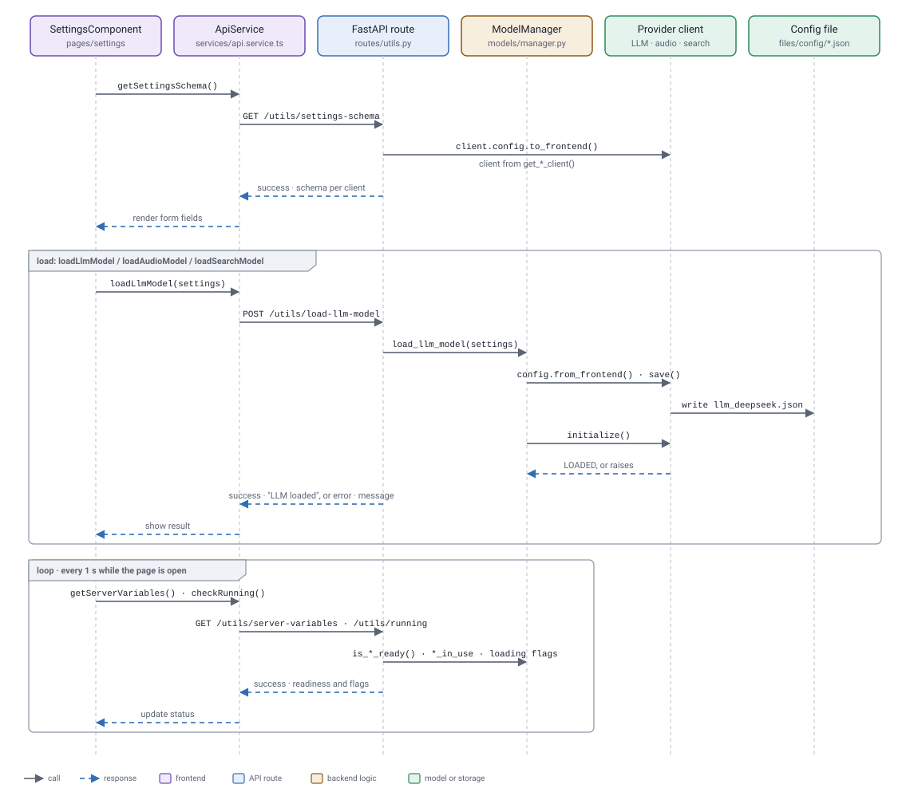
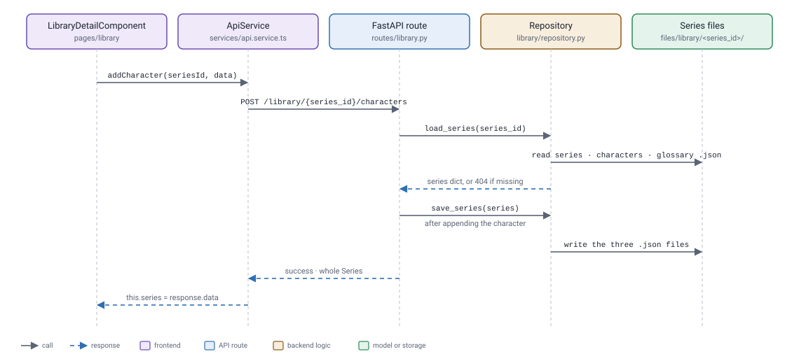

Routes and API
Every backend route, the frontend code that calls it, what it calls in the backend, and what it returns.
Response envelope
Every JSON route returns the same outer object. The examples further down show only status and data.
{
"status": "success",
"message": null,
"data": { … }
}status | Meaning |
|---|---|
success | The request finished. |
processing | A background job was started, or is still running. |
complete | A background job finished; data.result holds its result. |
idle | The background job has not run since the server started. |
error | message holds the reason. |
Rejected requests, such as a model not being loaded or another job already running, return HTTP 200 with status: "error". Bad request data returns HTTP 422, an unknown series 404, and an unexpected failure 500, all in the same envelope.
Settings and status
These routes go straight to ModelManager and answer when the work is done.

| Route | Called by | Backend call | Response |
|---|---|---|---|
GET /utils/settings-schema | SettingsComponent · getSettingsSchema() | client.config.to_frontend() for each client | success · schema |
POST /utils/load-llm-model | SettingsComponent · loadLlmModel() | ModelManager.load_llm_model(settings) | success · null |
POST /utils/load-audio-model | SettingsComponent · loadAudioModel() | ModelManager.load_audio_model(settings) | success · null |
POST /utils/load-search-model | SettingsComponent · loadSearchModel() | ModelManager.load_search_model(settings) | success · null |
GET /utils/server-variables | AppComponent, SettingsComponent · getServerVariables() | Each client's config, is_*_ready(), *_loading_error | success · status |
GET /utils/running | SettingsComponent · checkRunning() | TaskOrchestrator.get_running_state(), ModelManager flags | success · flags |
POST /utils/get-subtitle-file-info | Not called by the frontend | analyze_subtitle_file() | success · counts |
Requests
The three load routes take the same JSON body. Settings left out keep their saved values; a blank password keeps the stored key. provider is required but ignored.
{"provider": "llm", "settings": {"model_name": "deepseek-v4-flash", "temperature": 0.5}}get-subtitle-file-info takes a multipart file (.ass or .srt).
Responses
One entry per client, or null if the client could not be created. Password fields never include the key; is_set says whether one is saved.
{
"status": "success",
"data": {
"llm": {
"provider": "llm_deepseek",
"title": "DeepSeek",
"fields": [
{
"key": "model_name", "label": "Model", "type": "select",
"value": "deepseek-v4-flash", "default": "deepseek-v4-flash", "required": true,
"options": [{"label": "deepseek-v4-flash", "value": "deepseek-v4-flash"}, …]
},
{"key": "api_key", "label": "API Key", "type": "password", "value": "", "is_set": true, …},
…
]
},
"audio": { … },
"search": { … }
}
}{"status": "success", "message": "LLM loaded", "data": null}{"status": "error", "message": "Temperature: must be at most 2", "data": null}Password settings are left out of the value lists.
{
"status": "success",
"data": {
"llm": [{"key": "model_name", "label": "Model", "value": "deepseek-v4-flash"}, …],
"audio": [{"key": "model_name", "label": "Model", "value": "medium"}, …],
"search": [],
"llm_ready": true,
"audio_ready": true,
"search_ready": false,
"llm_loading_error": null,
"audio_loading_error": null,
"search_loading_error": "Tavily API key is required."
}
}{
"status": "success",
"data": {
"running": true,
"workflow": "translate_file",
"active_task": "TaskTranslateBatches",
"running_llm": true,
"running_audio": false,
"running_search": false,
"loading_llm_model": false,
"loading_audio_model": false,
"loading_search_model": false
}
}{"status": "success", "data": {"total_lines": "312", "character_count": "9840", "average_character_count": "31.54"}}Background jobs
A start route checks that nothing else is running and the model is loaded, then calls the workflow's start function and answers processing straight away. The job runs on the orchestrator's worker. StateService polls /task-results/{workflow} every second until the status is no longer processing. The diagram follows a file translation; the other jobs take the same path.

| Route | Called by | Workflow start | Model | Final result |
|---|---|---|---|---|
POST /translate/translate-line | TranslateComponent · translateLine() | start_translate_line() | LLM | text |
POST /translate/translate-file | TranslateComponent · translateFile() | start_translate_file() | LLM | file in translated |
POST /translate/review-translated-file | TranslateComponent · reviewTranslatedFile() | start_review_file() | LLM | file in reviewed |
POST /transcribe/transcribe-line | TranscribeComponent · transcribeAudio() | start_transcribe_clip() | Audio | text |
POST /transcribe/transcribe-file | TranscribeComponent · transcribeFile() | start_transcribe_file() | Audio | file in transcribed |
POST /library/{series_id}/update | LibraryDetailComponent · startLibraryUpdate() | start_update_library() | LLM, search | proposals |
GET /task-results/{workflow} | StateService · getWorkflowResult() | Reads TaskStateHandler | None | job state |
The tasks each workflow runs are listed in Orchestrator.
Requests
All start routes take multipart form data.
| Route | Fields |
|---|---|
translate-line | text, context (JSON string, default {}), input_lang (default ja), output_lang (default en) |
translate-file | file, input_lang, output_lang, batch_size (default 3), series_id (optional) |
review-translated-file | file (original), translated_file, input_lang, output_lang, batch_size (default 50), series_id (optional) |
transcribe-line, transcribe-file | file (audio), language |
update | file (subtitles) |
An unknown series_id on translate or review runs without library context.
Responses
{"status": "processing", "message": "Translation started", "data": {"workflow": "translate_file"}}{"status": "error", "message": "LLM not loaded", "data": null}progress is [current, total] for the active task.
{
"status": "processing",
"data": {
"workflow": "translate_file",
"active_task": "TaskTranslateBatches",
"progress": [96, 312],
"message": "Batch 12/40 complete",
"eta_seconds": 84.0,
"result": null
}
}When finished, status is complete and result is filled in. If the job failed, status is error, the envelope message is the error, and data keeps the failed task. A job that has not run yet returns {"status": "idle", "data": {"workflow": "transcribe_file"}}.
Translate line and transcribe line.
"result": {"text": "Hello"}Translate file, review and transcribe file. Review also returns corrected_count.
"result": {"output_filename": "episode01.en.ass", "folder": "translated"}"result": {"output_filename": "episode01.en.corrected.ass", "folder": "reviewed", "corrected_count": 14}updated_characters[].field is personality, relationships or history; character is only present for relationships.
"result": {
"proposals": {
"new_characters": [
{"name": "Ren", "aliases": [], "personality": ["Quiet"], "relationships": {"Aoi": ["Childhood friend."]}, "history": []},
…
],
"updated_characters": [
{"id": "aoi", "field": "relationships", "character": "Ren", "append": "Rivals on stage."},
…
],
"new_glossary": [{"term": "文化祭", "translation": "school festival", "notes": ""}, …],
"updated_glossary": [{"id": "senpai", "field": "notes", "value": "Keep untranslated in dialogue."}, …]
}
}Output files
File jobs save to backend/files/outputs/<folder>/, where the folder is translated, reviewed or transcribed. These routes read that folder directly.
| Route | Called by | Response |
|---|---|---|
GET /file-management/list?folder= | Translate, TranscribeComponent · listFiles() | success · files, newest first |
GET /file-management/download?folder=&filename= | Translate, TranscribeComponent · getFileBlob() | Raw file bytes, not JSON |
DELETE /file-management?folder=&filename= | Translate, TranscribeComponent · deleteFile() | success · null |
A missing file returns HTTP 404 with "message": "File not found".
File list
{
"status": "success",
"data": {
"files": [
{"name": "episode02.en.ass", "size": 51877, "modified": "2026-10-04T06:12:45.120384"},
{"name": "episode01.en.ass", "size": 48213, "modified": "2026-10-03T21:40:02.551907"}
]
}
}Library
Library edits load the series, change it and save it back in the same request. Every edit route returns the whole updated series, which replaces the page's copy. The diagram follows adding a character.

| Route | Called by | Backend call | Response |
|---|---|---|---|
GET /library/ | LibraryComponent, TranslateComponent · listSeries() | list_series_ids(), load_series() | success · summaries |
POST /library/ | LibraryComponent · createSeries() | unique_slug(), save_series() | success · Series |
DELETE /library/{series_id} | LibraryComponent · deleteSeries() | Deletes the series folder | success · null |
GET /library/{series_id} | LibraryDetailComponent · getSeries() | load_series() | success · Series |
PATCH /library/{series_id} | LibraryDetailComponent · updateSeries() | load_series(), save_series() | success · Series |
POST /library/{series_id}/characters | LibraryDetailComponent · addCharacter() | load_series(), save_series() | success · Series |
PATCH /library/{series_id}/characters/{character_id} | LibraryDetailComponent · updateCharacter() | find_character(), save_series() | success · Series |
DELETE /library/{series_id}/characters/{character_id} | LibraryDetailComponent · deleteCharacter() | load_series(), save_series() | success · Series |
POST /library/{series_id}/glossary | LibraryDetailComponent · addGlossaryTerm() | load_series(), save_series() | success · Series |
PATCH /library/{series_id}/glossary/{term_id} | LibraryDetailComponent · updateGlossaryTerm() | find_glossary_term(), save_series() | success · Series |
DELETE /library/{series_id}/glossary/{term_id} | LibraryDetailComponent · deleteGlossaryTerm() | load_series(), save_series() | success · Series |
The library update job is listed under Background jobs. Accepting a proposal calls the add and update routes above.
Requests
All edit routes take JSON. PATCH routes only change the fields that are sent.
| Route | Fields |
|---|---|
| Series | name, input_lang (default ja), output_lang (default en), notes |
| Character | name, aliases, personality, relationships, history |
| Glossary term | term, translation, notes |
{"name": "Aoi", "aliases": ["Aoi-chan"], "personality": ["Cheerful"], "relationships": {"Ren": ["Childhood friend."]}, "history": []}Responses
A missing series returns HTTP 404, except on DELETE. Deleting a missing series, or editing a missing character or glossary term, returns HTTP 200 with status: "error".
{
"status": "success",
"data": {
"series": [
{"id": "my-show", "name": "My Show", "input_lang": "ja", "output_lang": "en", "character_count": 12, "glossary_count": 30},
…
]
}
}{
"status": "success",
"data": {
"id": "my-show",
"name": "My Show",
"input_lang": "ja",
"output_lang": "en",
"notes": "Set in Tokyo.",
"characters": [
{
"id": "aoi",
"name": "Aoi",
"aliases": ["Aoi-chan"],
"personality": ["Cheerful", …],
"relationships": {"Ren": ["Childhood friend.", …]},
"history": ["Moved to Tokyo in episode 3.", …]
},
…
],
"glossary": [
{"id": "senpai", "term": "先輩", "translation": "senpai", "notes": "Keep untranslated."},
…
]
}
}